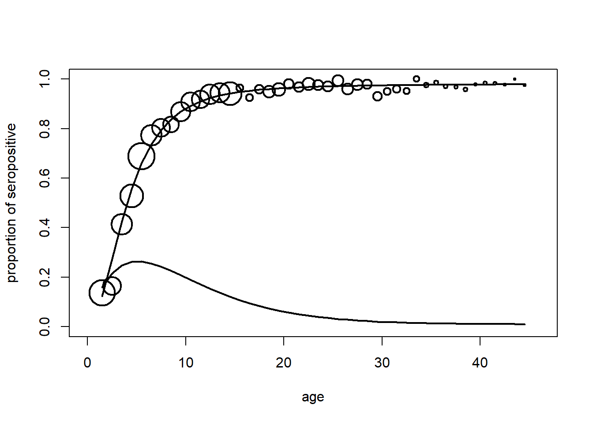

Warning: package 'rstan' was built under R version 4.3.3
Loading required package: StanHeaders
Warning: package 'StanHeaders' was built under R version 4.3.3
rstan version 2.32.6 (Stan version 2.32.2)
For execution on a local, multicore CPU with excess RAM we recommend calling
options(mc.cores = parallel::detectCores()).
To avoid recompilation of unchanged Stan programs, we recommend calling
rstan_options(auto_write = TRUE)
For within-chain threading using `reduce_sum()` or `map_rect()` Stan functions,
change `threads_per_chain` option:
rstan_options(threads_per_chain = 1)
Do not specify '-march=native' in 'LOCAL_CPPFLAGS' or a Makevars file
Warning: There were 2766 divergent transitions after warmup. See
https://mc-stan.org/misc/warnings.html#divergent-transitions-after-warmup
to find out why this is a problem and how to eliminate them.
Warning: Examine the pairs() plot to diagnose sampling problems
Warning: The largest R-hat is 1.12, indicating chains have not mixed.
Running the chains for more iterations may help. See
https://mc-stan.org/misc/warnings.html#r-hat
Warning: Bulk Effective Samples Size (ESS) is too low, indicating posterior means and medians may be unreliable.
Running the chains for more iterations may help. See
https://mc-stan.org/misc/warnings.html#bulk-ess
Warning: Tail Effective Samples Size (ESS) is too low, indicating posterior variances and tail quantiles may be unreliable.
Running the chains for more iterations may help. See
https://mc-stan.org/misc/warnings.html#tail-ess
Posterior
traceplot(fit1, pars =c("alpha1", "alpha2","alpha3"), inc_warmup =TRUE, nrow =1)
plot(mmm2$age,mmm2$posi/mmm2$ni,xlim=c(0,46),cex=0.01*mmm2$ni,xlab="age",ylab="proportion of seropositive",ylim=c(0,1),lwd=2)lines(mmm2$age,theta$sp,lty=1,lwd=2)lines(mmm2$age,theta$foi,lty=1,lwd=2)

Farrington model with 2 parameters
far2 <-"data { int<lower=1> Nage; // Number of age groups vector[Nage] age; // Age vector int<lower=0> posi[Nage]; // Number of positive cases int<lower=0> ni[Nage]; // Number of trials}parameters { real<lower=0.00001> alpha1; // Parameter alpha1 real<lower=0.00001> alpha2; // Parameter alpha2 real<lower=0> tau_alpha1; // Precision (inverse variance) of alpha1 real<lower=0> tau_alpha2; // Precision (inverse variance) of alpha2 real mu_alpha1; // Mean of normal prior for alpha1 real mu_alpha2; // Mean of normal prior for alpha2}transformed parameters { real<lower=0> sigma_alpha1; // Standard deviation of alpha1 real<lower=0> sigma_alpha2; // Standard deviation of alpha2 sigma_alpha1 = sqrt(1 / tau_alpha1); sigma_alpha2 = sqrt(1 / tau_alpha2);}model { vector[Nage] theta; // Priors alpha1 ~ normal(mu_alpha1, sigma_alpha1); alpha2 ~ normal(mu_alpha2, sigma_alpha2); tau_alpha1 ~ gamma(0.01, 0.01); tau_alpha2 ~ gamma(0.01, 0.01); mu_alpha1 ~ normal(0, sqrt(1 / 0.0001)); mu_alpha2 ~ normal(0, sqrt(1 / 0.0001)); // Likelihood for (i in 1:Nage) { real eta; // Declare eta as a real variable eta = (alpha1 / alpha2) * age[i] * exp(-alpha2 * age[i]) + (1 / alpha2) * ((alpha1 / alpha2)) * (exp(-alpha2 * age[i]) - 1); theta[i] = 1 - exp(eta); posi[i] ~ binomial(ni[i], theta[i]); }}"
Sampling
fit2 <-stan(model_code = far2, data = rrr, chains =4, warmup =1500, iter =5000)
Warning: There were 4693 divergent transitions after warmup. See
https://mc-stan.org/misc/warnings.html#divergent-transitions-after-warmup
to find out why this is a problem and how to eliminate them.
Warning: Examine the pairs() plot to diagnose sampling problems
Warning: The largest R-hat is 1.38, indicating chains have not mixed.
Running the chains for more iterations may help. See
https://mc-stan.org/misc/warnings.html#r-hat
Warning: Bulk Effective Samples Size (ESS) is too low, indicating posterior means and medians may be unreliable.
Running the chains for more iterations may help. See
https://mc-stan.org/misc/warnings.html#bulk-ess
Warning: Tail Effective Samples Size (ESS) is too low, indicating posterior variances and tail quantiles may be unreliable.
Running the chains for more iterations may help. See
https://mc-stan.org/misc/warnings.html#tail-ess
Posterior
traceplot(fit2, pars =c("alpha1", "alpha2"), inc_warmup =TRUE, nrow =1)
log_logistic <-"data { int<lower=1> Nage; // Number of age groups vector[Nage] age; // Age vector int<lower=0> posi[Nage]; // Number of positive cases int<lower=0> ni[Nage]; // Number of trials}parameters { real<lower=0.00001> alpha1; // Parameter alpha1 real alpha2; // Parameter alpha2 real<lower=0> tau_alpha1; // Precision (inverse variance) of alpha1 real<lower=0> tau_alpha2; // Precision (inverse variance) of alpha2 real mu_alpha1; // Mean of normal prior for alpha1 real mu_alpha2; // Mean of normal prior for alpha2}transformed parameters { real<lower=0> sigma_alpha1; // Standard deviation of alpha1 real<lower=0> sigma_alpha2; // Standard deviation of alpha2 sigma_alpha1 = sqrt(1 / tau_alpha1); sigma_alpha2 = sqrt(1 / tau_alpha2);}model { vector[Nage] theta; for (i in 1:Nage) { theta[i] = inv_logit(alpha2 + alpha1 * log(age[i])); } // Likelihood for (i in 1:Nage) { posi[i] ~ binomial(ni[i], theta[i]); } // Priors alpha1 ~ normal(mu_alpha1, sigma_alpha1); // Adjust these priors as needed alpha2 ~ normal(mu_alpha2, sigma_alpha2); // Adjust these priors as needed tau_alpha1 ~ gamma(0.01,0.01); tau_alpha2 ~ gamma(0.01,0.01); mu_alpha1 ~ normal(0, sqrt(10000)); mu_alpha2 ~ normal(0, sqrt(10000));}"
fit3 <-stan(model_code = log_logistic, data = rrr, chains =4, warmup =1500, iter =5000)
Warning: There were 2873 divergent transitions after warmup. See
https://mc-stan.org/misc/warnings.html#divergent-transitions-after-warmup
to find out why this is a problem and how to eliminate them.
Warning: Examine the pairs() plot to diagnose sampling problems
Warning: Bulk Effective Samples Size (ESS) is too low, indicating posterior means and medians may be unreliable.
Running the chains for more iterations may help. See
https://mc-stan.org/misc/warnings.html#bulk-ess
Warning: Tail Effective Samples Size (ESS) is too low, indicating posterior variances and tail quantiles may be unreliable.
Running the chains for more iterations may help. See
https://mc-stan.org/misc/warnings.html#tail-ess
traceplot(fit3, pars =c("alpha1", "alpha2"), inc_warmup =TRUE, nrow =1)
Warning: package 'boot' was built under R version 4.3.3
for (i in1:44){ theta$sp[i] =inv.logit(alpha2+alpha1*log(rrr$age[i])) theta$foi[i] = alpha1*exp(alpha2)*(rrr$age[i]^(alpha1-1))*(1-theta$sp[i])}plot(rrr$age,rrr$posi/rrr$ni,xlim=c(0,46),cex=0.01*rrr$ni,xlab="age",ylab="proportion of seropositive",ylim=c(0,1),lwd=2)lines(rrr$age,theta$sp,lty=1,lwd=2)lines(rrr$age,theta$foi,lty=1,lwd=2)